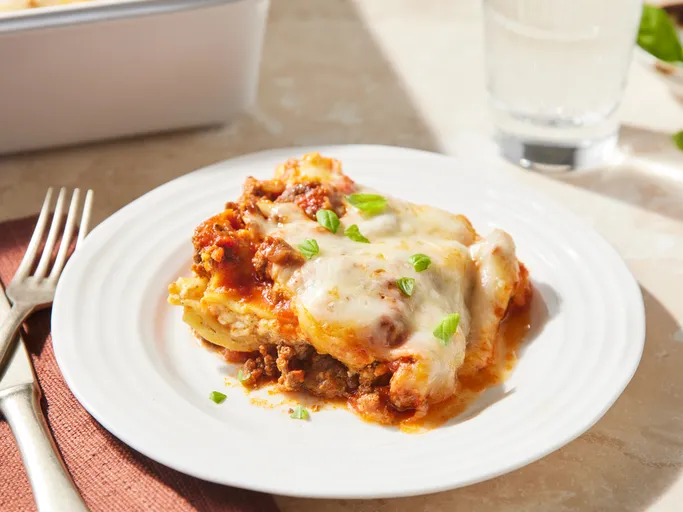

Lasagna
home

Description :
Lasagna is a classic baked Italian pasta dish originating from the Emilia-Romagna region, built from alternating wide, flat sheets of pasta, slow-simmered meat sauce (ragù alla Bolognese), creamy white sauce (béchamel), and grated Parmigiano-Reggiano. Baking melds the layers into a tender, structured slice with a bubbling, golden-brown crust.
Ingredients :
-
Pasta: 12–15 lasagna sheets (fresh egg pasta sheets or oven-ready/no-boil dried sheets).
-
Meat Ragù: 500 g ground beef (or a 50/50 mix of beef and pork), 1 finely diced onion, 1 diced carrot, 1 diced celery stalk, 2 cloves minced garlic, 700 ml crushed tomatoes or passata, 2 tbsp tomato paste, 120 ml dry red or white wine, olive oil, salt, and black pepper.
-
Béchamel Sauce: 50 g unsalted butter, 50 g all-purpose flour, 750 ml whole milk (warmed), a pinch of freshly grated nutmeg, and salt.
-
Cheese: 150 g freshly grated Parmigiano-Reggiano (plus optional 200 g low-moisture mozzarella for extra stretch).
-
Equipment: Large Dutch oven or heavy saucepan, medium saucepan, whisk, and a deep 9×13-inch (23×33 cm) baking dish.
How to make a Lasagna :
- 1.Simmer the meat ragù:45–60 minutes on low heat.Sauté diced onion, carrot, and celery in olive oil until soft. Brown the meat, deglaze with wine until evaporated, stir in tomato paste and crushed tomatoes, season with salt and pepper, and simmer gently until thick and rich.
- Whisk the béchamel sauce:Keep heat medium-low to prevent scorching.Melt butter in a saucepan, whisk in flour for 1–2 minutes to cook out the raw taste, then gradually whisk in warm milk until smooth and thickened. Season with salt and a pinch of nutmeg.
- Prep the pasta sheets:If using standard dried lasagna noodles, boil them in salted water for 2 minutes less than package directions and lay them flat on oiled parchment paper. Fresh or oven-ready sheets can go straight into the dish.
- Assemble the layers:Spread a thin layer of ragù on the bottom of the baking dish, followed by pasta sheets, ragù, béchamel, and Parmigiano-Reggiano. Repeat for 4 to 5 layers, finishing with pasta topped generously with béchamel and cheese.
- Bake and rest before slicing:35–40 minutes at 190°C (375°F), then rest 15 minutes.Cover with foil for the first 25 minutes, then uncover for the final 10–15 minutes until bubbling and golden. Let it rest for 15 minutes out of the oven so the layers set cleanly before cutting.